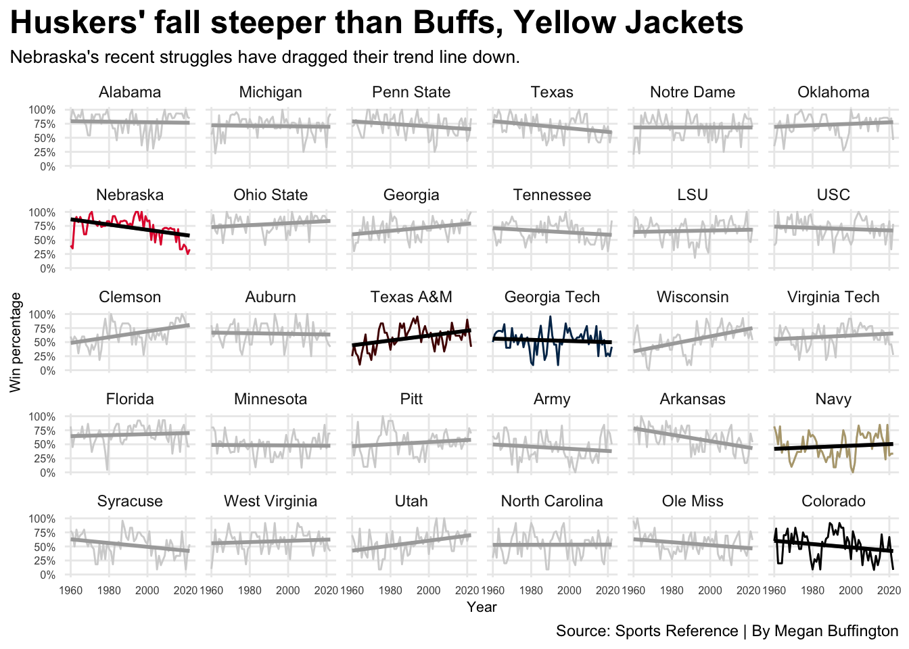

Has any other college football team fallen as hard as Nebraska?
Huskers
football
code
Author
Megan Buffington
Published
November 12, 2023
It’s been a rough few years to be a Nebraska football fan. The Cornhuskers haven’t had a winning season since 2016. They haven’t been to a bowl game since that year, and they haven’t won one since 2017.
The lack of success is unusual for the program. Nebraska is a college football powerhouse, though to some it may feel like more than a couple of decades since the three championships of the ’90s. Regardless of the reason for the slump, the Huskers haven’t looked like one of the winningest teams in college football for some time now, and it makes game days in Lincoln a bit less exciting.
But Nebraska fans feeling let down by their team should know they’re not the only ones. Five of the 30 winningest teams in Division I football are currently in a bowl-game drought of at least three years — including the Huskers.
Code
library(tidyverse)library(ggrepel)library(ggbump)library(patchwork)library(scales)CFB <-read_csv("CFBteamhistory.csv")CumWin <- CFB |>group_by(School) |>arrange(Year) |>mutate(CumWin =cumsum(OverallW))nu <- CFB |>filter(School =="Nebraska Cornhuskers") |>arrange(Year) |>mutate(CumWin =cumsum(OverallW))texam <- CFB |>filter(School =="Texas A&M Aggies") |>arrange(Year) |>mutate(CumWin =cumsum(OverallW))gatech <- CFB |>filter(School =="Georgia Tech Yellow Jackets") |>arrange(Year) |>mutate(CumWin =cumsum(OverallW))co <- CFB |>filter(School =="Colorado Buffaloes") |>arrange(Year) |>mutate(CumWin =cumsum(OverallW))bama <- CFB |>filter(School =="Alabama Crimson Tide") |>arrange(Year) |>mutate(CumWin =cumsum(OverallW))navy <- CFB |>filter(School =="Navy Midshipmen") |>arrange(Year) |>mutate(CumWin =cumsum(OverallW))nu1960on <- CFB |>filter(School =="Nebraska Cornhuskers", Year >1959& Year <2023) |>arrange(Year) |>mutate(CumWin =cumsum(OverallW),HistoricPct =mean(OverallPct))texam1960on <- CFB |>filter(School =="Texas A&M Aggies", Year >1959& Year <2023) |>arrange(Year) |>mutate(CumWin =cumsum(OverallW),HistoricPct =mean(OverallPct))gatech1960on <- CFB |>filter(School =="Georgia Tech Yellow Jackets", Year >1959& Year <2023) |>arrange(Year) |>mutate(CumWin =cumsum(OverallW),HistoricPct =mean(OverallPct))co1960on <- CFB |>filter(School =="Colorado Buffaloes", Year >1959& Year <2023) |>arrange(Year) |>mutate(CumWin =cumsum(OverallW),HistoricPct =mean(OverallPct))bama1960on <- CFB |>filter(School =="Alabama Crimson Tide", Year >1959& Year <2023) |>arrange(Year) |>mutate(CumWin =cumsum(OverallW),HistoricPct =mean(OverallPct))navy1960on <- CFB |>filter(School =="Navy Midshipmen", Year >1959& Year <2023) |>arrange(Year) |>mutate(CumWin =cumsum(OverallW),HistoricPct =mean(OverallPct))top30 <- CumWin |>filter(Year =="2023",) |>arrange(desc(CumWin)) |>top_n(30)top30full <- CumWin |>filter(School =="Alabama Crimson Tide"| School =="Auburn Tigers"| School =="Clemson Tigers"| School =="Florida Gators"| School =="Georgia Bulldogs"| School =="Georgia Tech Yellow Jackets"| School =="LSU Fighting Tigers"| School =="Michigan Wolverines"| School =="Minnesota Golden Gophers"| School =="Nebraska Cornhuskers"| School =="Notre Dame Fighting Irish"| School =="Ohio State Buckeyes"| School =="Oklahoma Sooners"| School =="Penn State Nittany Lions"| School =="Tennessee Volunteers"| School =="Texas A&M Aggies"| School =="Texas Longhorns"| School =="USC Trojans"| School =="Virginia Tech Hokies"| School =="Wisconsin Badgers"| School =="Pitt Panthers"| School =="Army Black Knights"| School =="Arkansas Razorbacks"| School =="Navy Midshipmen"| School =="Syracuse Orange"| School =="West Virginia Mountaineers"| School =="Utah Utes"| School =="North Carolina Tar Heels"| School =="Ole Miss Rebels"| School =="Colorado Buffaloes")CleanBowl <- CFB |>group_by(School) |>arrange(desc(Year)) |>filter(Year !=2023,is.na(Bowl) ==FALSE )BowlSlice <- CFB |>group_by(School) |>arrange(desc(Year)) |>filter(Year !=2023,is.na(Bowl) ==FALSE ) |>slice(1) |>mutate(yearssince = (2023-Year) ) |>filter(yearssince >2)nubowl <- BowlSlice |>filter(School =="Nebraska Cornhuskers")gatechbowl <- BowlSlice |>filter(School =="Georgia Tech Yellow Jackets")texambowl <- BowlSlice |>filter(School =="Texas A&M Aggies")cobowl <- BowlSlice |>filter(School =="Colorado Buffaloes")navybowl <- BowlSlice |>filter(School =="Navy Midshipmen")top301960on <- top30full |>group_by(School) |>filter(Year >1959& Year <2023) |>mutate(HistoricPct =mean(OverallPct))names <-c('Alabama Crimson Tide'="Alabama", 'Michigan Wolverines'="Michigan", 'Penn State Nittany Lions'="Penn State", 'Texas Longhorns'="Texas", 'Notre Dame Fighting Irish'="Notre Dame", 'Oklahoma Sooners'="Oklahoma", 'Nebraska Cornhuskers'="Nebraska", 'Ohio State Buckeyes'="Ohio State", 'Georgia Bulldogs'="Georgia", 'Tennessee Volunteers'="Tennessee", 'LSU Fighting Tigers'="LSU", 'USC Trojans'="USC", 'Clemson Tigers'="Clemson", 'Auburn Tigers'="Auburn", 'Texas A&M Aggies'="Texas A&M", 'Georgia Tech Yellow Jackets'="Georgia Tech", 'Wisconsin Badgers'="Wisconsin", 'Virginia Tech Hokies'="Virginia Tech", 'Florida Gators'="Florida", 'Minnesota Golden Gophers'="Minnesota", 'Pitt Panthers'="Pitt", 'Army Black Knights'="Army", 'Arkansas Razorbacks'="Arkansas", 'Navy Midshipmen'="Navy", 'Syracuse Orange'="Syracuse", 'West Virginia Mountaineers'="West Virginia", 'Utah Utes'="Utah", 'North Carolina Tar Heels'="North Carolina", 'Ole Miss Rebels'="Ole Miss", 'Colorado Buffaloes'="Colorado")ggplot()+geom_bar(data=BowlSlice, fill="lightgrey", aes(x=reorder(School,yearssince), weight = yearssince))+geom_bar(data=nubowl, aes(x=School, weight = yearssince), fill="#E41C38")+geom_bar(data=gatechbowl, aes(x=School, weight = yearssince), fill="#003057")+geom_bar(data=texambowl, aes(x=School, weight = yearssince), fill="#500000")+geom_bar(data=cobowl, aes(x=School, weight = yearssince), fill="black")+geom_bar(data=navybowl, aes(x=School, weight = yearssince), fill="#B5A67C")+coord_flip()+labs(x="",y="Number of years since bowl game",title="Cornhuskers lead Power Five teams in bowl drought",subtitle="It's a bit of a sore subject among fans, but Nebraska isn't alone. Other historically good programs have hit hard times.",caption="Source: Sports Reference | By Megan Buffington")+theme_minimal()+theme(plot.title =element_text(size =18, face ="bold"),axis.title =element_text(size =8), plot.subtitle =element_text(size=10), panel.grid.minor =element_blank(),plot.title.position ="plot")
These four other teams are in similar downturns. Navy has had one winning season since 2016. Colorado went 1-11 last year, and their only bowl game since 2016 came after a 4-2 COVID season. Texas A&M admitted they were struggling when they fired head coach Jimbo Fisher, knowing they would still have to pay him nearly $80 million. Georgia Tech hasn’t been ranked since 2014, the longest streak of these five.
While all have had their struggles, Nebraska’s decline is significantly more notable. For starters, they are actually declining. Texas A&M and Navy’s season win percentages are trending upward, despite their recent lack of bowl game appearances.
Code
ggplot()+geom_line(data=top301960on, aes(x=Year, y=OverallPct), color="lightgrey")+geom_smooth(data=top301960on, aes(x=Year, y=OverallPct), method ="lm", color ="darkgray", se =FALSE)+geom_line(data=nu1960on, aes(x=Year, y=OverallPct), color="#E41C38")+geom_smooth(data=nu1960on, aes(x=Year, y=OverallPct), method ="lm", color="black", se =FALSE)+geom_line(data=co1960on, aes(x=Year, y=OverallPct))+geom_smooth(data=co1960on, aes(x=Year, y=OverallPct), method ="lm", color="black", se =FALSE, alpha = .5)+geom_line(data=gatech1960on, aes(x=Year, y=OverallPct), color ="#003057")+geom_smooth(data=gatech1960on, aes(x=Year, y=OverallPct), method ="lm", color="black", se =FALSE)+geom_line(data=navy1960on, aes(x=Year, y=OverallPct), color="#B5A67C")+geom_smooth(data=navy1960on, aes(x=Year, y=OverallPct), method ="lm", color="black", se =FALSE)+geom_line(data=texam1960on, aes(x=Year, y=OverallPct), color="#500000")+geom_smooth(data=texam1960on, aes(x=Year, y=OverallPct), method ="lm", color="black", se =FALSE)+facet_wrap(~factor(School, levels=c("Alabama Crimson Tide", "Michigan Wolverines", "Penn State Nittany Lions", "Texas Longhorns", "Notre Dame Fighting Irish", "Oklahoma Sooners", "Nebraska Cornhuskers", "Ohio State Buckeyes", "Georgia Bulldogs", "Tennessee Volunteers", "LSU Fighting Tigers", "USC Trojans", "Clemson Tigers", "Auburn Tigers", "Texas A&M Aggies", "Georgia Tech Yellow Jackets", "Wisconsin Badgers", "Virginia Tech Hokies", "Florida Gators", "Minnesota Golden Gophers", "Pitt Panthers", "Army Black Knights", "Arkansas Razorbacks", "Navy Midshipmen", "Syracuse Orange", "West Virginia Mountaineers", "Utah Utes", "North Carolina Tar Heels", "Ole Miss Rebels", "Colorado Buffaloes")), labeller=as_labeller(names))+scale_y_continuous(labels=percent)+labs(x="Year",y="Win percentage",title="Huskers' fall steeper than Buffs, Yellow Jackets",subtitle="Nebraska's recent struggles have dragged their trend line down.",caption="Source: Sports Reference | By Megan Buffington")+theme_minimal()+theme(plot.title =element_text(size =18, face ="bold"),axis.text=element_text(size=6),axis.title =element_text(size =8), plot.subtitle =element_text(size=10), panel.grid.minor =element_blank(),plot.title.position ="plot")

Though Colorado and Georgia Tech’s win percentages also have a negative trend, their declines aren’t nearly as steep as Nebraska’s. They’ve also been less consistent. While there is a trend, they’ve fluctuated between success and failure in a way Nebraska hasn’t. The Husker’s decline is not the result of a mixed bag; it’s much clearer: They were good, and now they’re bad.
It’s also worth noting that Nebraska is a significantly better team than the others, at least historically. They’ve won 128 more games than the next closest team, Texas A&M.
But the Huskers are starting to fall behind. In the 2000s, they were third in all-time wins, just barely behind Alabama. In 2014, Nebraska fell to fourth. Today, they’re seventh.
Code
ggplot()+geom_step(data=top30full, aes(x=Year, y=CumWin, group=School), color="light grey", alpha=.3)+geom_step(data=nu, aes(x=Year, y=CumWin), color="#E41C38")+geom_step(data=bama, aes(x=Year, y=CumWin), color="#828A8F")+geom_step(data=gatech, aes(x=Year, y=CumWin), color="#003057")+geom_step(data=texam, aes(x=Year, y=CumWin), color="#500000")+geom_step(data=co, aes(x=Year, y=CumWin), color="black")+geom_step(data=navy, aes(x=Year, y=CumWin), color="#B5A67C")+scale_x_continuous(limits =c(2010, 2025))+scale_y_continuous(limits =c(450, 975))+labs(x="Year",y="Total wins",title="Nebraska stands out among bowl-drought-hit top teams",subtitle="The Huskers aren't the only top team in a dry spell, but historically, they're significantly better.",caption="Source: Sports Reference | By Megan Buffington")+annotate("text", x=2023.8, y=974, label="Alabama", size=3)+annotate("text", x=2023.8, y=882, label="Nebraska", size=3)+annotate("text", x=2024, y=775, label="Texas A&M", size=3)+annotate("text", x=2024.1, y=740, label="Georgia Tech", size=3)+annotate("text", x=2023.5, y=700, label="Navy", size=3)+annotate("text", x=2023.7, y=655, label="Colorado", size=3)+theme_minimal()+theme(plot.title =element_text(size =18, face ="bold"),axis.title =element_text(size =8), plot.subtitle =element_text(size=10), panel.grid.minor =element_blank(),plot.title.position ="plot")
But AP polls draw the starkest comparison. The Cornhuskers were ranked at the end of every season from 1969 to 2001. Since then, they’ve been ranked just six times.
No other top team in a bowl game drought has been ranked that often or for anywhere near that stretch of time. The Aggies are the only team with a postseason ranking streak worth mentioning, and their seven years seem like nothing compared to the Husker’s 32.
At 5-5, Nebraska has its best record in five years, and fans are beginning to let themselves hope for a bowl game. For a Nebraska fan, it’s a wish worth having, not just to experience in the moment, but to protect the legacy of one of the best programs in college football history.